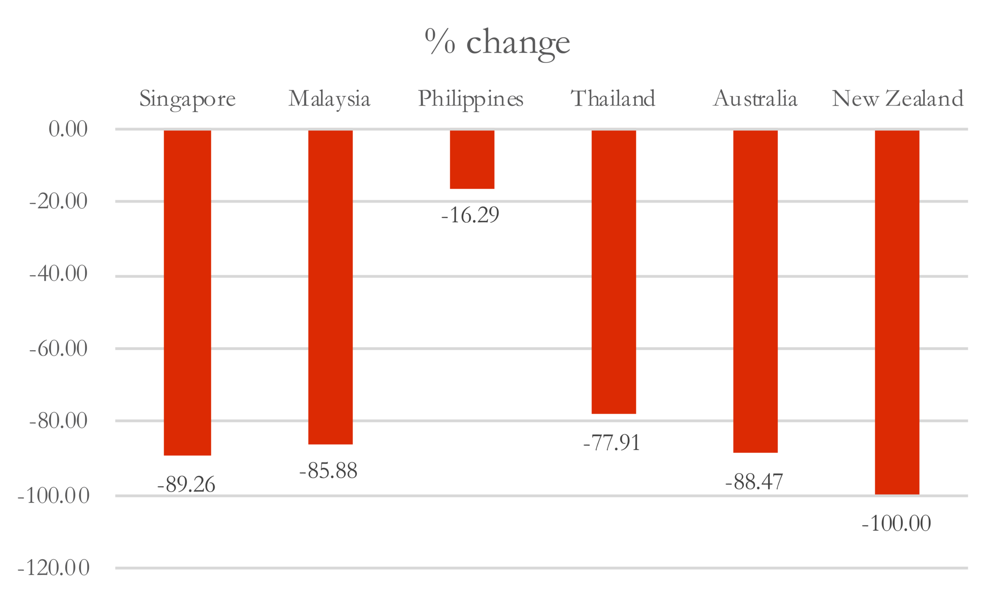

Belt and Road Initiative:
A Brief Introduction
| Karl Ho |
| University of Texas at Dallas |
|---|
Prepared for presentation
Introduction
Since the announcement of the People’s Republic of China President Xi Jinping in 2013, the “Belt-and-Road Initiative” (BRI) mega-plan have invested over $400 billion in over
Introduction
How would the NSP be conceived in the Southeast Asian countries under the influence of BRI?
Will Taiwan’s new Go-south regional community building effort be dwarfed by the oversized BRI investment projects?
Data
-
Bureau of Trade, Taiwan ROC
-
Import and Export
-
-
Ministry of Economic Affairs, Taiwan ROC
-
Outward Investments by country
-
-
China Global Investment Tracker
-
Asian Barometer Survey Waves 3 & 4
Malaysia reacts to BRI
The Philippines reacts to BRI
Introduction
In this study, we assess Taiwan’s New Southbound Policy (NSP) from the perspective of economic integration theory (Alesina et al. 2000) specifically taking into account the “China factor”.
Introduction
In 2016, upon election, DPP president Tsai Ing-wen announced the New Southbound Policy aiming at diversification of economic partnerships to ameliorate the over-dependence on China and foster a network of international economic and political partners to the south and southeast of the country
Alesina et al.: Economic integration push small states to disintegrate.
Introduction
Since the announcement of the People’s Republic of China President Xi Jinping in 2013, the “Belt-and-Road Initiative” (BRI) mega-plan have invested over $400 billion in the BRI countries, many of which are also targets of the NSP.
Introduction
How would the NSP be conceived in the Southeast Asian countries under the influence of BRI?
Will Taiwan’s new Go-south regional community building effort be dwarfed by the oversized BRI investment projects?
How much the “China factor” will have direct or indirect influence determining NSP’s implementation and path of development?
Research Questions
What are the conditions for Taiwan’s new efforts to succeed?
Data
-
Bureau of Trade, Taiwan ROC
-
Import and Export
-
-
Ministry of Economic Affairs, Taiwan ROC
-
Outward Investments by country
-
-
China Global Investment Tracker
-
Asian Barometer Survey Waves 3 & 4
Why Malaysia and the Philippines?
-
Top trade parters among NSP countries
-
Two of most friendly
-
Most similar design: democracy, Chinese population
-
BRI experiences
Demographics
| Malaysia | Philippines | |
|---|---|---|
| Population | 31,381,992 | 104,256,076 |
| GDP (PPP) | $930.8 billion | $875.6 billion |
| GDPPC (PPP) | $29,000 | $8,300 |
| Chinese Population | 24.60% | 1.80% |
| Religion | Muslim | Catholicism |
| Democracy | Parliamentary | Presidential |
Taiwan Trade:
Malaysia and the Philippines, 2000-17
Taiwan Outward Investments:
Malaysia and the Philippines, 2000-18

Taiwan's Outward Investments, 2017-18

Taiwan's Outward Investments by country, 2017-18
China’s Investments:
Malaysia and the Philippines
(in US$ millions), 2008-2018
China’s Investments by sector, 2008-17
China’s Investments by sector, 2008-17
Malaysia reacts to BRI
The Philippines reacts to BRI
Individual level data analysis:
Asia Barometer Waves III & IV
Perceptions of China: Logit Model

Perceptions of China: Logit Model
China does more good or harm: Logit Model
China does more good or harm: Logit Model
Perception of China and the US
| China | US | China | US |
|---|
| Philippines 2010 | Philippines 2014 |
|---|
| Which country has the most influence in Asia? | 16.29 | 62.94 | 20.93 | 56.47 |
| In ten years, which country will have the most influence in Asia? | 15.96 | 61.15 | 19.26 | 56.52 |
| Which country should be a model for our own country's future development? | 6.98 | 65.89 | 6.52 | 64.6 |
| Which country has the most influence in Asia? | 33.26 | 40.37 | 37.87 | 41.83 |
| In ten years, which country will have the most influence in Asia? | 39.15 | 23.48 | 49.27 | 24.1 |
| Which country should be a model for our own country's future development? | 12.98 | 7.52 | 18.44 | 9.91 |
| China | US | China | US |
|---|
| Malaysia 2011 | Malaysia 2014 |
|---|
Perception of China and the US
Conclusions and Discussions
-
BRI and NSP are not coincidental.
-
NSP - "integrate to disintegrate":
-
Not entirely in the name of trade.
-
Reorientation, with new priorities such as India and USA.
-
No consistent pattern yet, but incentivize companies to invest.
-
Conclusions and Discussions
-
BRI:
-
Policy-driven vs. Market-driven
-
Role of State-owned Enterprises
-
Highly emphasize on:
-
Energy
-
Transportation/Infrastructure
-
Real estate
-
-
Implications
- China
- BRI approach is not cost-effective
- Externalities can be unmanageable, especially when the public in democratic regimes responds with outright rejection.
- Taiwan
- Integrate with other neighbors to disintegrate from China
- Without fundamental change in industrial policies, making NSP cost-effective is formidable.
- Common goal with the United States: putting China in check!
- USA
- Zero-sum game with China in eyes of Asian public
Future research
-
More comparative studies with other NSP and BRI countries
-
Integration and disintegration theory: high differentials contribute to high risk in public acceptance and political disintegration.
-
Distribution of benefits matters!